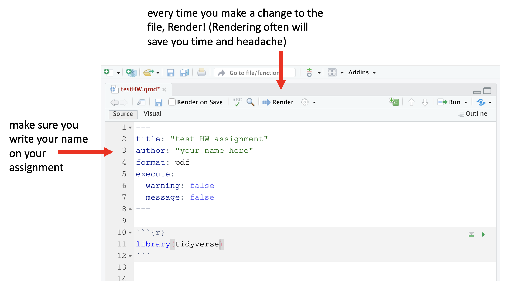
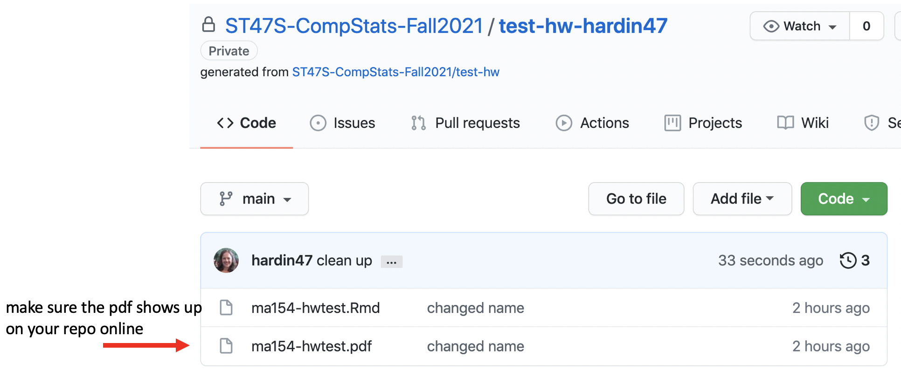

Working on assignments with GitHub
Huge thanks to Ben Wiedermann at HMC for sharing the following.
Working on assignments with GitHub and Gradescope
In SDS 261, we will use GitHub to access and submit assignments. Here is the basic structure of how it will work:
- Get the assignment materials from GitHub classroom.
- Clone the repository to any machine you are using.
- Work on the assignment and push back to GitHub.
The following diagram lays out the process, and the rest of the document provides a more detailed set of instructions.
Installing R + RStudio + Git
Most importantly, please become familiar with Happy Git and GitHub with R. Happy Git with R is an incredibly user friendly resource which includes help for almost every single thing that might happen when getting started.
The first step is to install R + RStudio + Git on your machine. (If you are planning to use Smith’s RStudio server, R + RStudio + Git are all three already installed for you.)
Create an account on GitHub (if you already have one, use it!).
Introduce everyone: R + RStudio (should happen automatically); yourself to GitHub (see Happy Git and GitHub with R); RStudio + GitHub (see Happy Git and GitHub with R).
Follow the rest of the steps that Jenny Bryan spells out in Happy Git and GitHub with R. Most likely, you only need to work through step 12. Step 15 is detailed below after you have gotten the assignment from GitHub.

Get the assignment materials from GitHub Classroom
Each assignment will be provided as a link to GitHub classroom. Click the link. (The link will come to you via an email. If you lose the email, or the email goes to your spam folder, let me know or ask a friend for the link.)
The lab assignments will be individual assignments. The project will be a paired or an individual assignment. To accept an individual assignment, click the “Accept this assignment” button.
For all joint assignments, you will need to create a team before you can start.
- If you are working with a partner, create a team name that contains both of your GitHub ids. (If you are working by yourself, use your GitHub id as your team name.)
- One partner accepts the assignment and creates the team.
- If you are working with a partner, the person who did not create the team and accept the assignment should now click the GitHub classroom link, find the newly created team, and click the Join button.

The assignment files will be copied as a private repository that you (and your partner, if applicable) that the professor has access to.
We will call this version, that lives on your personal GitHub account the GitHub fork.
Clone the assignment (or project) repository on to your own computer(s)
Once your repository has been created, you should clone the code to whatever computer you are working on. Just like a Google Doc, you can work on the files from different machines at different times. Unlike a Google Doc, you’ll have to make sure to open the repo (clone or pull if you’ve already cloned) and save the repo (commit + push) more deliberately.
- Click on the link for the repository.

- Click the
Clone or downloadbutton and copy the URL.
- On the cloning machine (e.g., your own compute or the RStudio server), create a new R project with the URL copied from above. Follow the steps at https://happygitwithr.com/new-github-first.html (section 15.2 New RStudio Project via git clone).
Work on the assignment, push back to GitHub
All of the GitHub interaction will take place through the RStudio IDE. The two important steps for getting the assignment back to GitHub are:
pull
If you are working with a colleague or on different machines it is so incredibly important to get in the habit of immediately clicking on pull when you start your work. (If you are working alone on a single machine pull won’t hurt! You’ll just be told that your files are already up to date.)

render your work
Don’t forget to put your name on the assignment. Also, make sure that you render to pdf. Render early and often. The more often you render, the fewer headaches you will have.

commit your work
You don’t need to commit every file, but you do need to commit files that are integral to the analysis (always commit .qmd, .pdf, data files, images that created the pdf, etc.).
push your work to GitHub
It is good practice to use meaningful commit messages to help your future self figure out your past work.
check your work on GitHub
To make sure that the work went through, always check your GitHub repo online to confirm any changes you made.

You can submit multiple times before the deadline. Your last submission will be assessed.
Once assignments are assessed, you will be able to see feedback on GitHub. You can pull assignment feedback back onto your own computer.